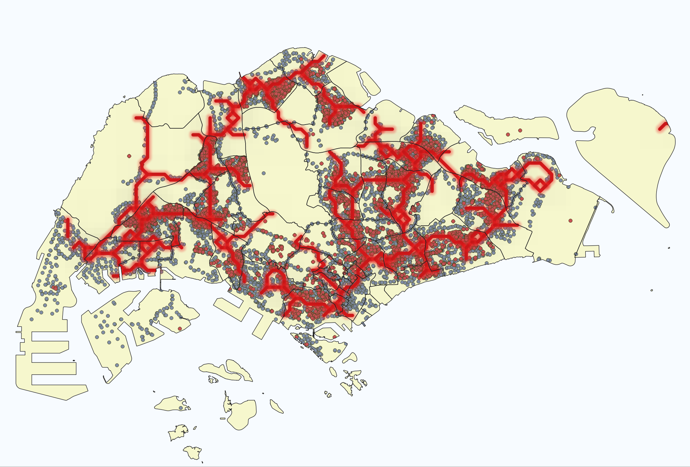
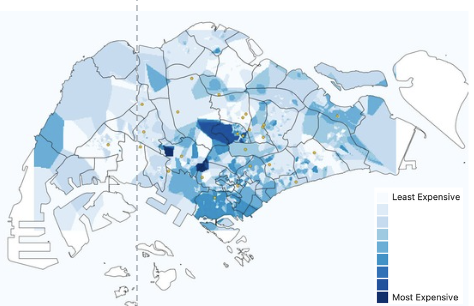

METHODOLOGY
Overview

The chart above shows the overall process that our team employed in our project. In this page, we will go through each of these phases into further detail.
Landform
Slope
Aspect
Hillshade
Distance proximity among buildings
Environment
- Surface Irradiation (Sunlight)
Economy
Property Prices
Power Grid Electricity Flow
Accessibility to Road (construction phase)
Culture and Society
Natural Reserve
Built-Up Area
Data Collection/ Preparation
Data was collected from various sources to be used in the different analyses. For the purpose of this project, we will be using various land-form and satellite data. The data is taken from Data Gov and NASA website. The table below will show the sources of the files that we have used for our analysis.
For the Land Form data taken from Data.Gov website:
| File Name | Description | Source |
|---|---|---|
| Layers of Singapore for Master Plan 2019 | Provides the map layer for Singapore. | https://data.gov.sg/datasets?query=land+use+2019&page=1&resultId=d_90d86daa5bfaa371668b84fa5f01424f |
| Bulding, Transport, Road | For building, transports and road data layer | https://download.geofabrik.de/asia/malaysia-singapore-brunei.html |
| Property Prices | The prices for properties in Singapore. Only 2023 and 2024 will be used for the purpose of the project. | https://data.gov.sg/datasets/d_8b84c4ee58e3cfc0ece0d773c8ca6abc/view |
| Derived map of global electricity transmission and distribution lines | Electricity transmission of power grids occurring in Singapore. | https://energydata.info/dataset/derived-map-global-electricity-transmission-and-distribution-lines |
Others:
| File Name | Description | Source |
|---|---|---|
|
|
https://power.larc.nasa.gov/api/pages/?urls.primaryName=Monthly+%26+Annual |
|
|
https://ugl.sg/2022/10/03/dem-of-singapore-srtm/ |
Multiple-Attribute Decision Making (MADM) Feasibility Topography Analysis
To select Lim Chu Kang as the specific study area for solar panel installation, we considered six critical factors using MADM or what we call Multiple-Criteria Decision Analytics (MCDA) methodology. Each factor plays a unique role in determining the suitability of the area for solar energy deployment. Below is an explanation of each factor and why it was chosen:
| Factors | Explanation |
|---|---|
| Aspect | Aspect refers to the direction that a slope faces, measured in degrees (0–360°). South-facing slopes (157.5°–202.5°) are optimal for solar panels in Singapore because they receive the most direct sunlight throughout the day due to Singapore’s equatorial position. |
| Slope | Slope measures the steepness of terrain, expressed in degrees. Flat or gently sloping areas (<10°) are ideal for solar panels as they allow proper installation angles without structural challenges. |
| Hillshade | Hillshade simulates terrain illumination based on sun position (azimuth and altitude). It identifies areas exposed to direct sunlight versus shaded regions. |
| Surface Ir-radiance | Surface irradiance measures the amount of solar radiation received per unit area, typically in kWh/m²/year. Higher irradiance levels directly correlate with higher energy generation potential. |
| Property Prices | Property prices influence the economic feasibility of solar projects. Areas with lower land costs reduce overall project expenses, making large-scale installations more viable |
| Power Electricity Grid Flow | Proximity to existing electrical grid infrastructure is crucial for connecting solar farms and minimizing transmission costs. |
Power Grid Electricity Flow
The Power Grid Electricity Flow map illustrates electricity transmission from power grids across Singapore, with grid locations highlighted in red. Notably, the central region exhibits denser and more interconnected electrical flow, indicating high infrastructure activity. However, this area is also heavily populated with properties and transport networks—represented by the blue and red points—leaving limited space for solar farm installations. In contrast, areas toward the western region, including Lim Chu Kang, show less development and extended (but lower) grid density, suggesting greater potential for solar farm deployment due to the availability of open land and fewer competing land-use demands.

Surface Irradiance
Irradiance Data
Prediction Of Worldwide Energy Resources (POWER) is a project that seeks to provide data and services related to renewable energy like solar energy. The open API services provided by POWER allows for retrieval of irradiance data for our specified region of the world. This API was used to retrieve the monthly Irradiance values for Singapore from the years 2023-2025.
The parameters for the API Call are as summarised below:
| Parameter | Description |
|---|---|
parameters |
The climate or solar parameter to retrieve (only one allowed per request) |
community |
Defines the user community and data context |
latitude-min |
Minimum latitude of the bounding box |
latitude-max |
Maximum latitude of the bounding box |
longitude-min |
Minimum longitude of the bounding box |
longitude-max |
Maximum longitude of the bounding box |
start |
Start year of the data request |
end |
End year of the data request |
format |
Output file format |
The API Call that was used to retrieve the data was therefore:
https://power.larc.nasa.gov/api/temporal/monthly/point?start=2023&end=2025&latitude=1.3521&longitude=103.8198¶meters=ALLSKY_SFC_SW_DWN&community=RE&format=CSV
The API call returns monthly Irradiance values, as well as an annual average. For our analysis, the annual average was used.
Irradiance Area Calculation
In QGIS, we first load in the Masterplan 2019 Subzone Boundaary Layer.
After which, a new field, “Area” was calculated using the field calculator, with the expression :
$areaThis area was multiplied by the annual irradiance value of 2023, since it was the year with complete readings.
The result was then symbolised on a map with graduated colouring.
Property Prices
Property prices are a key economic factor influencing the feasibility of solar farm installations. Areas with higher property values—indicated by darker shades of blue—pose greater challenges, as the cost of land acquisition and ongoing maintenance can outweigh the potential benefits. In contrast, sub-zones represented by lighter shades of blue offer more viable opportunities for solar deployment due to their relatively lower land costs, making them more economically attractive for long-term investment.

Final Site Selection
With all the factors considered, we decided that the most suitable location for a potential solar farm would be in Lim Chu Kang.
We then performed further analysis of the isolated Lim Chu Kang subzone to seek out suitable locations within Lim Chu Kang. Factors that were considered were land suitability, proximity to roads, proximity to buildings, and landuse types.
For land suitability, the same topography method was employed, but on the area of Lim Chu Kang. Proximity to roads was considered as it would be a crucial factor in construction of solar fams, in terms of transportation of construction materials. We also analysed proximity between buildings so to identify areas with large enough open spaces that could house a solar farm.
Lastly, for landuse types, we identified that Open Spaces and Agricultural Spaces were the best types of land to host a solar farm on. Open Spaces are available land spaces that are not being used to anything else, and would therefore have the lowest barrier to building a solar farm. Agricultural Lands often contain huge areas of land that are directly exposed to the sun, making them highly suitable spaces as well. For these reasons, landuse analysis was also employed to narrow down the area.
Ultimately, the northern area of Lim Chu Kang, Sungei Buloh, was chosen as the most optimal location for a potential solar farm in Singapore.